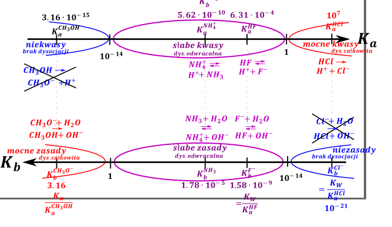
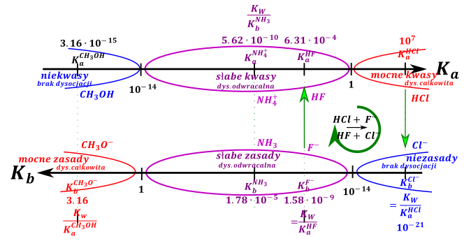
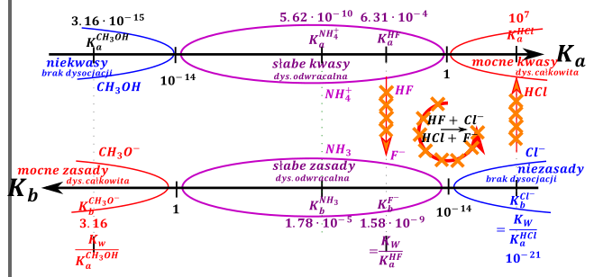

W teorii Brønsteada sprzężoną parą kwas zasada nazywamy dwie drobiny, które różnią się dokładnie jednym protonem. Kwas ma proton więcej, a zasada proton mniej, jeżeli napiszemy wyrażenia na stałą dysocjacji kwasowej i zasadowej odpowiednio sprzężonego kwasu i zasady dostajemy:
\[HA \rightleftarrows H^{+} + A^{-}\ \ \ \ \ K_{A} = \frac{\left\lbrack H^{+} \right\rbrack\left\lbrack A^{-} \right\rbrack}{\lbrack HA\rbrack}\]
\[A^{-} + H_{2}O \rightleftarrows HA + OH^{-}\ \ \ \ \ \ K_{b} = \frac{\lbrack HA\rbrack\left\lbrack OH^{-} \right\rbrack}{\left\lbrack A^{-} \right\rbrack}\]
Magia stanie się po wymnożeniu tych dwóch wyrażeń przez siebie, następuje wówczas skrócenie stężenia HA i \(A^{-}\)
\[K_{A}^{HA}·K_{b}^{A^{-}} = \frac{\left\lbrack H^{+} \right\rbrack\left\lbrack A^{-} \right\rbrack}{\lbrack HA\rbrack}·\frac{\lbrack HA\rbrack\left\lbrack OH^{-} \right\rbrack}{\left\lbrack A^{-} \right\rbrack} = \left\lbrack H^{+} \right\rbrack\left\lbrack OH^{-} \right\rbrack = K_{w}\]
\[\mathbf{K}_{\mathbf{A}}^{\mathbf{HA}}\mathbf{K}_{\mathbf{B}}^{\mathbf{A}^{\mathbf{-}}}\mathbf{=}\mathbf{K}_{\mathbf{W}}\mathbf{=}^{\mathbf{T = 25}\mathbf{C}}\mathbf{= 1}\mathbf{0}^{\mathbf{- 14}}\]
Z prawa działań na logarytmach wiem, że
\[\log{(K_{a}K_{b})} = \log K_{w}\]
\[\log K_{a} + \log K_{b} = \log K_{w}\]
\[\text{ } - \log K_{a} + - \log K_{b} = - \log K_{w}\]
\[\text{ }\mathbf{p}\mathbf{K}_{\mathbf{A}}\mathbf{+}\mathbf{p}\mathbf{K}_{\mathbf{B}}\mathbf{=}\mathbf{p}\mathbf{K}_{\mathbf{w}}\mathbf{=}^{\mathbf{T = 25}\mathbf{C}}\mathbf{= 14}\]
Można z tych zależności wysnuć następujący wniosek:
Znając wartość \(\mathbf{K}_{\mathbf{a}}\) sprzężonego kwasu znamy również wartość \(\mathbf{K}_{\mathbf{b}}\mathbf{\ }\) sprzężonej zasady i odwrotnie, pod warunkiem, że znamy wartość \(\mathbf{K}_{\mathbf{W}}\) (lub wiemy, że temperatura wynosi 25°C).
Jak wcześniej wspomniano granicą pomiędzy mocnym i słabym kwasem jest wartość \(K_{a} = 1\) . Sprzężona zasada wówczas zgodne z wzorem
\[K_{B} = \frac{K_{W}}{K_{A}} = \frac{10^{- 14}}{1} = 10^{- 14}\]
Analogicznie dla drugiej wartości granicznej pomiędzy słabym kwasem i niekwasem – wartości \(K_{A} = 10^{- 14}\) obliczona wartość stałej dysocjacji zasadowej \(K_{b}\) wynosi 1.Można z tego wywnioskować, iż dla silnych kwasów sprzężone są niezasady (tzn. drobiny będące sprzężonymi zasadami do silnych kwasów nie mają właściwości zasadowych w wodzie – nie hydrolizują z utworzeniem jonów \(OH^{-}\) . Analogicznie do słabych kwasów (hydrolizujących odwracalnie) sprzężone są słabe zasady (również zachodzi wtedy reakcja odwracalna). Natomiast do niekwasów – substancji, które nie odszczepiają swojego wodoru (np. etanol – jak wiemy nie jest on kwaśny w smaku, wódka czysta nie jest kwaśna, nie licząc jakiś wynalazków, jak cytrynówka) – sprzężone są silne zasady, które dysocjują lub hydrolizują całkowicie z utworzeniem jonów \(OH^{-}\) . Można to przedstawić na grafie:

Czyli do mocnych kwasów sprzężone są niezasady, do słabych kwasów słabe zasady (a nie mocne zasady, co jest bardzo często powtarzanym błędem!!!!),a do niekwasów mocne zasady!!. Oczywiście im mocniejszy kwas tym słabsza sprzężona zasada, ale nie można powiedzieć, że do słabych kwasów są mocne zasady sprzężone!!!!
Reakcje samorzutne spełniają regułę zegara na tym grafie, czyli reakcja powinna przebiegać jak zegarek, np. dodając \(HCl\) do \(F^{-}\) to zajdzie reakcja:
\[HCl + F^{-} \rightarrow Cl^{-} + HF\]

Natomiast w drugą stronę reakcja nie zajdzie, kwas \(HF\) jest słabszym kwasem niż \(HCl\) przez niezgodność z regułą zegarową. (zegarek musiałby iść w drugą stronę co jest niemożliwe). Oczywiście w myśl teorii Brønsteada każda reakcja musi zachodzić w myśl schematu:
\[\text{ }kwas_{1} + zasada_{2} \rightarrow kwas_{2} + zasada_{1}\]
\(HCl + F^{-} \rightarrow HF + Cl^{-}\) samorzutna, bo zgodna z kierunkiem zegara.
\(HF + Cl^{-} \rightarrow HCl + F^{-}\) niesamorzutna (niemożliwa) bo niezgodna z ruchem wskaówek zegara.

Ogólnie rozwiązując zadania z tematu \(\mathbf{pH}\) wpierw rozważamy dysocjacje wszystkich mocnych elektrolitów (jakie jony są obecne w roztworze początkowo), ewentualną reakcje między powstałymi drobinami (czy jony reagują ze sobą) i na końcu hydrolizę tych drobin (czy zachodzi hydroliza powstałych drobin, będącymi słabymi kwasami bądź zasadami).
Czyli np. Oblicz pH 0.1 molowego roztworu \(\left( NH_{4} \right)_{2}SO_{4}\) ; T=25C
Dla soli wpierw rozważam dysocjację czyli jej rozpad na jony. Jest to sól dobrze rozpuszczalna, a więc dysocjuje całkowicie, reakcji pomiędzy powstałymi jonami dla tego przykładu mieć nie będę, gdyż jony pochodzą z jednej soli, a potem rozważam hydrolizę czyli reakcję powstałych jonów z wodą zmieniająca pH (o ile jest, odwracalna czy nieodwracalna zależy od mocy tego co uzyskałem)
Ogólnie dla soli wpierw rozważam dysocjacje soli (czyli rozpad na jony), a dopiero potem hydrolizę
\[\left( NH_{4} \right)_{2}SO_{4} \rightarrow 2NH_{4}^{+} + SO_{4}^{2 -}\]
Dla uproszczenia obliczeń często zakłada się, że jon \(SO_{4}^{2 -}\) nie hydrolizuje, mimo, że w sprzężony kwas \(HSO_{4}^{-}\) w tablicach jest na granicy mocnego i słabego kwasu \((K_{a}^{HSO_{4}^{-}} = 1.02·10^{- 2})\) . Jon \(NH_{4}^{+}\) jest słabym kwasem, gdyż jest sprzężonym do słabej zasady, jaką jest amoniak \(K_{b}^{NH_{3}} = 1.78·10^{- 5}\) i tym samym hydrolizuje odwracalnie w myśl równania:
\[\text{ }NH_{4}^{+} + H_{2}O \rightleftarrows NH_{3} + H_{3}O^{+}\]
Niewątpliwie zachodząca hydroliza jest hydrolizą kwasową, bo powstają jony \(H_{3}O^{+}\ \) ,więc potrzebuje \(K_{a}\) , w tablicach mogę znaleźć tylko wśród stałych kwasowych i zasadowych stałą dysocjacji zasadowej amoniaku, \(K_{b}^{NH_{3}}\) , a nie \(K_{b}^{NH_{4}^{+}}\) . Z uwagi na to, że \(NH_{3}\) i \(NH_{4}^{+}\) są sprzężonymi parami kwas – zasada mogę uzależnić je od siebie, w myśl prawa:
\[K_{b}^{zas}K_{A}^{kwas} = K_{W}\]
\[K_{b}^{NH_{3}}·K_{a}^{NH_{4}^{+}} = K_{w}\]
\[1.78·10^{- 5}·K_{a}^{NH_{4}^{+}} = 10^{- 14}\]
\[K_{a}^{NH_{4}^{+}} = 0.562·10^{- 9}\]
Mając odpowiednią stałą dysocjacji kwasowej rozwiązuje klasycznie zadanie z pH.
Czy mam jedno zródło \(H^{+}\) →TAK (nie mam innej reakcji, w której zmieniają mi się stężenia jonów \(H^{+}\) i \(OH^{-}\)
Kolejno rozważam możliwość stosowania wzoru uproszczonego, o stopniu dysocjacji \(\alpha\) nic nie wiem, ale mogę sprawdzić warunek \(\frac{c_{0}}{K_{a}} > 400\) .
Do sprawdzenia tego warunku potrzebuję stężenia początkowego drobiny hydrolizującej i w tym wypadku nie jest ona równa stężeniu soli, gdyż rozważam hydrolizę jonu \(NH_{4}^{+}\) . Jego stężenie jest oczywiście dwukrotnością stężenia soli:
\[c_{0}^{NH_{4}^{+}} = 2·0.1 = 0.2\]
I dopiero to stężenie używam do dalszych obliczeń:
\[\frac{c_{0}}{K_{a}} > 400??? \rightarrow \frac{0.1·2}{0.562·10^{- 9}} > 400\]
Czyli mogę używać wzoru uproszczonego:
\[K_{a} = \frac{\left\lbrack H^{+} \right\rbrack^{2}}{c_{0}}\]
\[\text{ }c_{0}^{NH_{4}^{+}} = 2·0.1 = 0.2\]
\[\left\lbrack H^{+} \right\rbrack = \sqrt{0.562·10^{- 9}·0.2} = 1.06·10^{- 5}\]
\[pH = - \log\left\lbrack H^{+} \right\rbrack = - \log\left( 1.06·10^{- 5} \right) = 4.975\]
Stwierdzono że pH roztworu azydku sodu=8.35. Ile gramów azydku sodu \(NaN_{3}\ \) znaduje się w 150ml roztworu i jakie jest stężenie niezdysocjowanego \(HN_{3}\) \(pK_{A}^{HN_{3}}\mathbf{=}4.3\)
Rozważając hydrolizę zadanej soli w roztworze mamy jony \(NaN_{3} \rightarrow Na^{+} + N_{3}^{-}\) .Jon \(Na^{+}\) wywodzi się z mocnej zasady ( \(NaOH\) ), więc nie hydrolizuje. Jon \(N_{3}^{-}\) wywodzi się z słabego kwasu, zachowuje się jak słaba zasada w myśl równania:
\[N_{3}^{-} + H_{2}O \rightleftarrows HN_{3} + OH^{-}\]
Jest to niewątpliwie hydroliza zasadowa, potrzebujemy jej stałej, natomiast mamy poda
\[pK_{a}^{HN_{3}} = 4.7\]
\[K_{A}^{HN_{3}} = 10^{- 4.7} = 2·10^{- 5}\]
\[K_{A}^{HN_{3}}K_{B}^{N_{3}^{-}} = 10^{- 14}\]
\[2·10^{- 5}K_{B}^{N_{3}^{-}} = 10^{- 14}\]
\[K_{B}^{N_{3}^{-}} = 0.5·10^{- 9}\]
Zadanie rozwiązujemy jak klasyczne zadanie z hydrolizy słabej zasady. Mając pH możemy obliczyć stężenie jonów OH - .
\[pH = 8.35 \rightarrow pOH = 14 - 8.35 = 5.65 \rightarrow OH^{-} = 10^{- 5.65} = 2.24·10^{- 6}\]
Sprawdzamy możliwość zastosowania jednego z „typowych” wzorów:
Czy jedno źródło \(OH^{-}\) : TAK, jest nim reakcja hydrolizy \(N_{3}^{-} + H_{2}O \rightleftarrows HN_{3} + OH^{-}\)
Czy \(\frac{c_{0}}{K_{B}} > 400?\) nic nie powiemy, bo nie mamy stężenia początkowego, ani \(\alpha\) , więc musimy czyli stosować „pełniejsze” wzory:
\[K_{b} = \frac{\left\lbrack OH^{-} \right\rbrack^{2}}{c_{0} - \left\lbrack OH^{-} \right\rbrack}\]
Ten wzór wydaje się spoko, bo posiadamy zarówno \(K_{b}\) jaki i mam \(\ OH^{-}\) . Wstawiając dane dostajemy:
\[0.5·10^{- 9} = \frac{{(2.24·10^{- 6})}^{2}}{c_{0} - 2.24·10^{- 6}}\]
\[c_{0} = 0.01\]
Mając stężenie początkowe i objętość podaną w zadaniu mogę powiedzieć, ile mam moli związku, a tego mogę obliczyć masę molową.
\[n = cV = 0.01·0.15 = 0.0015 \rightarrow m = nM\]
Pozostaje obliczyć stężenie niezdysocjowanego jonu \(N_{3}^{-}\) . Najłatwiej jest to zrobić tabelką.
\[N_{3}^{-} + H_{2}O \rightleftarrows HN_{3} + OH^{-}\]
| \[N_{3}^{-}\] | \[HN_{3}\] | \[OH^{-}\] | |
|---|---|---|---|
| \[0.01\] | \[0\] | \[0\] | |
| \[- x\] | \[+ x\] | \[+ x\] | |
| \[0.01 - x\] | \[x\] | \[x = 2.24·10^{- 6}\] |
Mając dane stężenie jonów \(OH^{-}\) widzimy, iż wartość ta jest równa stężeniu zdysocjowanego \(N_{3}^{-}\) . Stężenie niezdysocjowanego możemy obliczyć jako
\[\left\lbrack N_{3}^{-} \right\rbrack_{K} = 0.01 - 2.24·10^{- 6} = 0.01\]